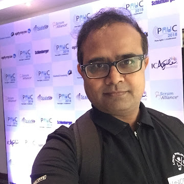

I deliver AI programmes that ship — from agentic architecture to enterprise rollout.
22+ years delivering business-critical programmes for global financial services clients, now specialised in Generative AI and Agentic AI systems. I lead the programmes — teams, stakeholders, governance — and build the systems: agentic RAG platforms, knowledge-graph retrieval, multi-agent orchestration, MLOps pipelines. PMP®-, PMI-ACP®- and SAFe® 6-certified, and an executive AI/ML alumnus of IIM Visakhapatnam.
Currently: Technical Manager @ Globant — delivering AI programmes for Deloitte US

What I do
One profile, two altitudes: I run the programme and I understand the code.
Most AI initiatives fail between the slide deck and the production system. My work lives exactly in that gap.
01 · Delivery
GenAI & Agentic Systems Delivery
Leading discovery-to-production AI programmes for enterprise clients — currently agentic RAG platforms on Azure for Deloitte US: solution architecture, backlog, estimates, budget, and a team that ships.
02 · Engineering
Agentic Engineering, Hands-on
I build what I lead: hybrid RAG with vector + knowledge-graph retrieval, CrewAI multi-agent systems, agent memory, guardrails and evals — trained directly with Google's AI Agents intensive programme.
03 · Leadership
Agile & SAFe Delivery Leadership
12+ years of Agile programme leadership for global financial services clients in regulated environments — SAFe PI Planning and Scrum-of-Scrums across 50+ distributed team members, Waterfall-to-Agile transformations, and governance to enterprise (CMMi L5) standards. Grounded by executive management education at IIM Visakhapatnam.
Featured work
Enterprise delivery, matched by open, hands-on proof.
The same architecture I deliver for clients — agentic retrieval grounded in knowledge graphs — I have built end-to-end in the open and written about.
Client programme · Deloitte US
INK Content Catalyst — Agentic RAG Platform
Search-and-update platform automating ingestion, retrieval, and maintenance of complex audit manuals. Specialised AI agents orchestrated with Azure Durable Functions; hybrid semantic + keyword retrieval; Neo4j for multi-hop dependency reasoning.
Open source · Flagship build
Hybrid RAG — Production-grade Capstone
A complete hybrid RAG system built solo: vector DB + graph DB retrieval, ingestion pipelines, embeddings, evaluation and monitoring modules, Airflow DAGs, DVC data versioning, Docker, and a Streamlit UI.
Writing · Thought leadership
Stop Hallucinations in RAG: Why Knowledge Graphs Change Everything
Why pure vector retrieval hits a ceiling in high-stakes domains, and how knowledge-graph-grounded retrieval changes the reliability equation — informed by shipping exactly this pattern in enterprise audit systems.
Planning an AI initiative? Let's talk about what it takes to actually ship it.
I'm open to conversations about AI/GenAI delivery, agentic system architecture, and advisory engagements — whether you're scoping a discovery phase or rescuing a stalled programme.
Get in touch